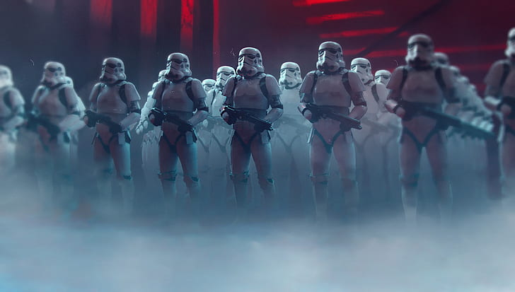
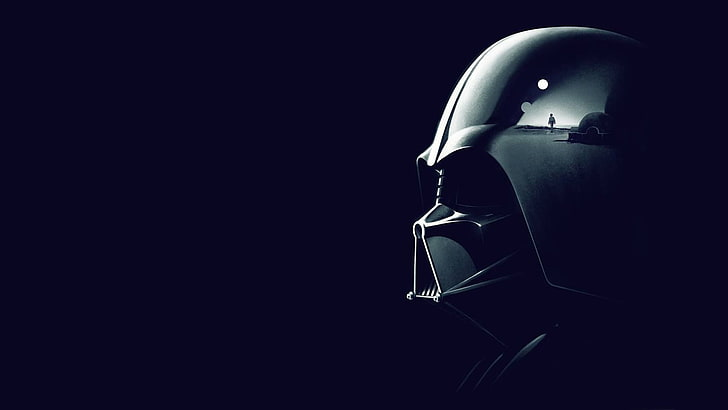
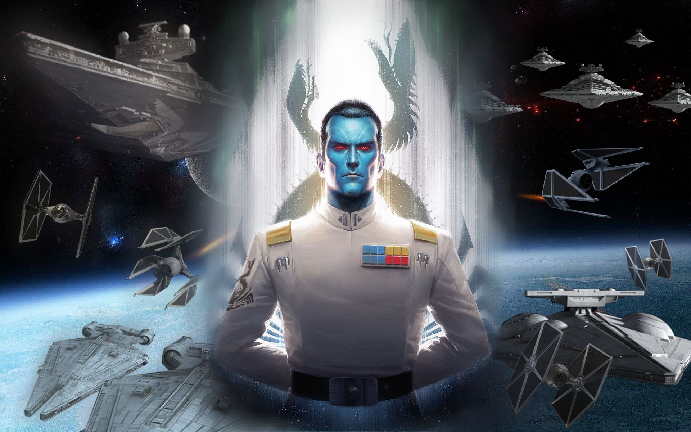
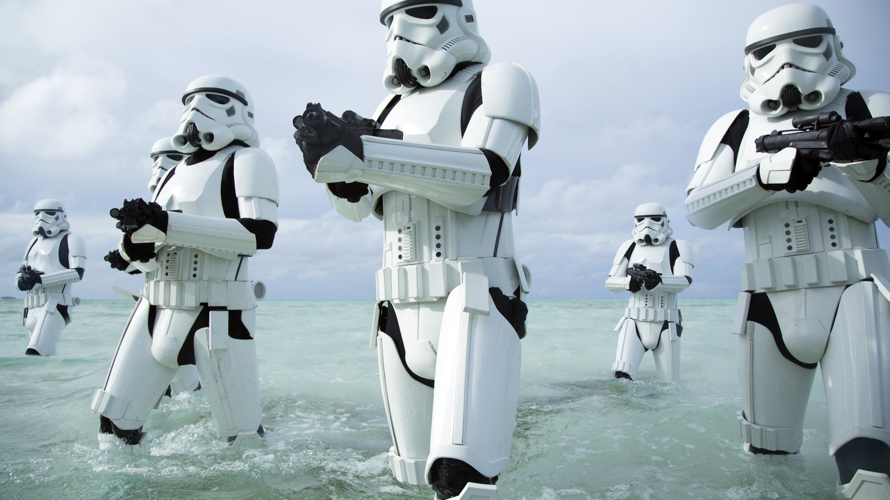
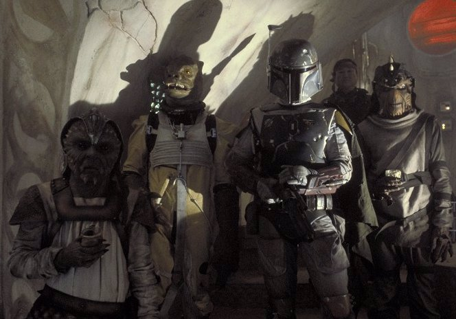

Héroes a su manera, estos son quienes forman parte del ejercito del Imperio. Muchos de ellos ánimos, son quienes dan su vida por la noble causa de proteger al pueblo.
Aquellos que luchan por y para nosotros


Mano derecha del Emperador Palpatine, Darth Vader ha liderado las numerosas búsquedas de los Jedi remanentes, deteniendo a los insurgentes antes de que pongan en peligro a las personas. Debido a heridas ocasionadas por los Jedi, se ve imposibilitado de subsistir sin su traje. Sin embargo, eso no lo hace menos eficiente en su rol.

Un grupo selecto de 12 individuos, cuyo rango es únicamente atribuible por la voluntad del Emperador Palpatine. Tienen a su cargo el comando de una flota, y poseen la autoridad de establecer recompensas a quienes presenten un peligro. Se encuentran en lo más alto de la línea de mando, a la par de Darth Vader.

Soldados de infantería que sacrifican la gloria personal por el bienestar común, los Stormtrooper son la primera línea de defensa del Imperio. Voluntarios que se inscribieron para recibir preparación militar y entrenamiento como equipo, son expertos de armas y trabajan bien en grupos.

Hay individuos con experiencia previa, un historial que prueba su fama y renombre. Estos individuos -usualmente llamados cazarrecompensas- pueden afiliarse por cuenta propia al Imperio, pudiendo actuar como agentes solitarios.